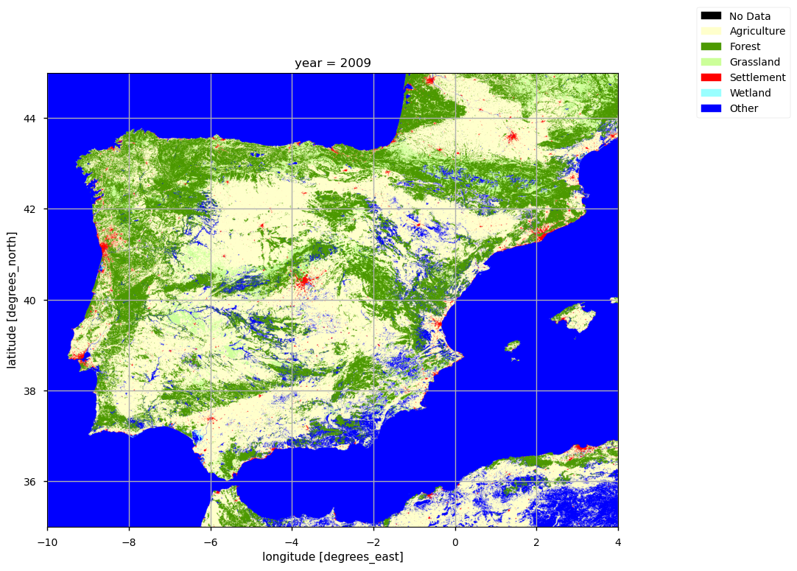

1.4.1. Satellite Land Cover completeness for Spatial Planning and Land Management#
Production date: 22-10-2024
Produced by: Luís Figueiredo e Inês Girão (+ATLANTIC)
🌍 Use case: Using land cover products to monitor Land Cover (LC) changes#
❓ Quality assessment question#
How consistent with other datasets are satellite observations in capturing land cover changes, such as urbanisation?
Land cover data is a vital resource across a wide range of fields, from climate change research to urban and regional planning. Products with long historical timelines allow scientists, policymakers, and planners to assess how land use and land cover have evolved over time, supporting evidence-based decision-making.
In this notebook, we use the Land Cover Classification Gridded Maps from 1992 to present derived from satellite observations (hereafter referred to as LC) provided by the Climate Data Store (CDS) of the Copernicus Climate Change Service (C3S). The analysis focuses on evaluating the consistency of C3S-derived settlement (Artificial Land) classes with independent statistical records from EUROSTAT, across selected years and NUTS2 regions in the Iberian Peninsula.
📢 Quality assessment statement#
These are the key outcomes of this assessment
The dataset demonstrates physical consistency and precision among the different datasets as it aligns closely with equivalent statistics from official sources (EUROSTAT,2025). Specifically, the analysis shows that the Urban/Settlements category closely matches EUROSTAT’s statistics for the Artificial Land category in the most populated NUTs 2 regions. Differences are typically small, within 0.3–5% absolute difference for the majority of regions and years assessed.
Beyond the scope of this analysis, additional work could examine whether the dataset aligns with findings reported in peer-reviewed studies, such as Fernández-Nogueira and Corbelle-Rico (2018). This would help validate the robustness and reliability of the dataset through comparison with multiple datasets.
Another aspect of the analysis supporting the dataset’s precision is the identification of trade-offs between urban expansion and the decline of agricultural areas, a well-documented phenomenon. Numerous studies, including observations across multiple European regions, note that urban growth frequently replaces agricultural lands Bagan and Yamagata (2014).

📋 Methodology#
1. Define the AoI, search and download LC data.
3. Calculate total area and area percentage of change in for AoI by LC classes
4. Calculate the area percentage and the area percentage change for the most populated regions
📈 Analysis and results#
1. Define the AoI, search and download LC data.#
Before we begin we must prepare our environment. This includes installing the Application Programming Interface (API) of the CDS, and importing the various python libraries that we will need.
Import all the libraries/packages#
We will be working with data in NetCDF format. To best handle this type of data we will use libraries for working with multidimensional arrays, in particular Xarray. We will also need libraries for plotting and viewing data.
Data Overview#
To search for data, visit the CDS website: http://cds.climate.copernicus.eu Here you can search for ‘Satellite observations land’ using the search bar. The data we need for this tutorial is the Land cover classification gridded maps from 1992 to present derived from satellite observations. This catalogue entry provides global Land Cover Classification (LCC) maps with a very high spatial resolution, with a L4 processing level, on an annual basis with a one-year delay, following the Global Climate Observing System(GCOS) convention requirements. These Land Cover (LC) maps correspond to a global classification scheme encompassing 22 land cover classes.
Note: Although the dataset is officially described as having 22 global land cover classes, many of these classes are internally subdivided into more detailed subcategories (e.g., types of cropland, forest canopy structure, types of shrubland). These subdivisions allow for greater ecological detail but can be aggregated back into the 22 main classes for standard analysis and intercomparison purposes.
Data specifications for this use case:
Years: 2009, 2012, 2015, 2018 and 2022
Versions: v2.0.7 for years up to 2015; v2.1.1 for 2018
Format: Downloaded as .zip files
At the end of the data request form on CDS, select Show API request to generate Python code, which can be pasted directly into a Jupyter Notebook cell. Running this cell will retrieve the requested files, provided that you have accepted the dataset’s terms and conditions on the CDS platform. It is advisable to define the desired time period and Area of Interest (AoI) explicitly when preparing the API request, as shown in the example cells below.
100%|██████████| 5/5 [00:01<00:00, 2.93it/s]
/data/common/miniforge3/envs/wp5/lib/python3.12/site-packages/earthkit/data/readers/netcdf/fieldlist.py:202: FutureWarning: In a future version of xarray the default value for data_vars will change from data_vars='all' to data_vars=None. This is likely to lead to different results when multiple datasets have matching variables with overlapping values. To opt in to new defaults and get rid of these warnings now use `set_options(use_new_combine_kwarg_defaults=True) or set data_vars explicitly.
return xr.open_mfdataset(
/data/wp5/.tmp/ipykernel_383669/3410308190.py:6: DeprecationWarning: dropping variables using `drop` is deprecated; use drop_vars.
ds = ds.assign_coords(year=ds["time"].dt.year).swap_dims(time="year").drop("time")
/data/wp5/.tmp/ipykernel_383669/570138594.py:39: RuntimeWarning: invalid value encountered in cast
xi = block.astype(np.int64, copy=False)
/data/wp5/.tmp/ipykernel_383669/570138594.py:39: RuntimeWarning: invalid value encountered in cast
xi = block.astype(np.int64, copy=False)
/data/wp5/.tmp/ipykernel_383669/570138594.py:39: RuntimeWarning:
invalid value encountered in cast
/data/wp5/.tmp/ipykernel_383669/570138594.py:39: RuntimeWarning:
invalid value encountered in cast
2. Inspect and view data#
Now that we have downloaded the data, we can inspect it. We have requested the data in NetCDF format. This is a commonly used format for array-oriented scientific data. To read and process this data we will make use of the Xarray library. Xarray is an open source project and Python package that makes working with labelled multi-dimensional arrays simple and efficient. We will read the data from our NetCDF file into an xarray.
Label Color Definition and Class Correspondence#
To facilitate visual inspection of the Land Cover (LC) classes, we define a dictionary containing each class label (the “keys”), the corresponding color code (the “colors”), and the associated numeric identifier (the “values”). In addition, we create a second dictionary to establish the correspondence between the original land cover classes provided in the metadata and the aggregated IPCC classes, as described in the Product User Guide (see resources).
{'No Data': ('#000000', np.uint8(0)),
'Cropland Rainfed': ('#ffff64', np.uint8(10)),
'Cropland Rainfed Herbaceous Cover': ('#ffff64', np.uint8(11)),
'Cropland Rainfed Tree Or Shrub Cover': ('#ffff00', np.uint8(12)),
'Cropland Irrigated': ('#aaf0f0', np.uint8(20)),
'Mosaic Cropland': ('#dcf064', np.uint8(30)),
'Mosaic Natural Vegetation': ('#c8c864', np.uint8(40)),
'Tree Broadleaved Evergreen Closed To Open': ('#006400', np.uint8(50)),
'Tree Broadleaved Deciduous Closed To Open': ('#00a000', np.uint8(60)),
'Tree Broadleaved Deciduous Closed': ('#00a000', np.uint8(61)),
'Tree Broadleaved Deciduous Open': ('#aac800', np.uint8(62)),
'Tree Needleleaved Evergreen Closed To Open': ('#003c00', np.uint8(70)),
'Tree Needleleaved Evergreen Closed': ('#003c00', np.uint8(71)),
'Tree Needleleaved Evergreen Open': ('#005000', np.uint8(72)),
'Tree Needleleaved Deciduous Closed To Open': ('#285000', np.uint8(80)),
'Tree Needleleaved Deciduous Closed': ('#285000', np.uint8(81)),
'Tree Needleleaved Deciduous Open': ('#286400', np.uint8(82)),
'Tree Mixed': ('#788200', np.uint8(90)),
'Mosaic Tree And Shrub': ('#8ca000', np.uint8(100)),
'Mosaic Herbaceous': ('#be9600', np.uint8(110)),
'Shrubland': ('#966400', np.uint8(120)),
'Shrubland Evergreen': ('#966400', np.uint8(121)),
'Shrubland Deciduous': ('#966400', np.uint8(122)),
'Grassland': ('#ffb432', np.uint8(130)),
'Lichens And Mosses': ('#ffdcd2', np.uint8(140)),
'Sparse Vegetation': ('#ffebaf', np.uint8(150)),
'Sparse Tree': ('#ffc864', np.uint8(151)),
'Sparse Shrub': ('#ffd278', np.uint8(152)),
'Sparse Herbaceous': ('#ffebaf', np.uint8(153)),
'Tree Cover Flooded Fresh Or Brakish Water': ('#00785a', np.uint8(160)),
'Tree Cover Flooded Saline Water': ('#009678', np.uint8(170)),
'Shrub Or Herbaceous Cover Flooded': ('#00dc82', np.uint8(180)),
'Urban': ('#c31400', np.uint8(190)),
'Bare Areas': ('#fff5d7', np.uint8(200)),
'Bare Areas Consolidated': ('#dcdcdc', np.uint8(201)),
'Bare Areas Unconsolidated': ('#fff5d7', np.uint8(202)),
'Water': ('#0046c8', np.uint8(210)),
'Snow And Ice': ('#ffffff', np.uint8(220))}
{'No Data': ('#000000', [0]),
'Agriculture': ('#ffffcc', [10, 11, 12, 20, 30, 40]),
'Forest': ('#4c9900',
[50, 60, 61, 62, 70, 71, 72, 80, 81, 82, 90, 100, 160, 170]),
'Grassland': ('#ccff99', [110, 130]),
'Settlement': ('#ff0000', [190]),
'Wetland': ('#99ffff', [180]),
'Other': ('#0000ff',
[120, 121, 122, 140, 150, 151, 152, 153, 200, 201, 202, 210])}
Plot maps#
Having defined the color and legends for the IPCC classes and using the metadata of the dataset to get the colors and legends for each Land Cover class it is now possible to plot our data either with the original colors or with the IPCC previously defined colors.
The function below plots the LC maps for the year of your choice , using both land cover schemes. From the output, we can already distinguish the differences in classification schemes.
3. Calculate total area and area percentage of change in for AoI by LC classes#
To further identify changes in LC patterns, in this user question, Nomenclature of Territorial Units for Statistics (NUTS) 2 will be used, providing the information regarding the main regions/parcels of the Iberian Peninsula.
The NUTS are a hierarchical system divided into 3 levels. NUTS 1 correspond to major socio-economic regions, NUTS 2 correspond to basic regions for the application of regional policies, and NUTS 3 correspond to small regions for specific diagnoses. Additionally a NUTS 0 level, usually co-incident with national boundaries is also available. The NUTS legislation is periodically amended; therefore multiple years are available for download.
The step below masks the Land Cover data according to the NUTS 2 boundaries and calculates the area of each pixel (weighted by Latitude). For each NUTS 2 region, we proceed with the analysis and visual inspection of Land Cover areas per class and corresponding percentages during the selected period.
Mask regions#
First, we need to establish the geometry of the NUTS region (level 2) in order to make the corresponding statistics.
Compute cell area#
Then, we can calculate the area of each pixel taking into consideration the curvature of the earth (i.e., weighted by Latitude).
Bar Charts - Iberian Peninsula#
Having the area calculated and the NUTS 2 regions assigned to each pixel, we can now proceed to create the plots of the LC areas per class, by year. First, let’s inspect the total area of each LC class in this AoI. We will use the original LC classes to highlight which ones have more significant changes.
/data/wp5/.tmp/ipykernel_383669/570138594.py:39: RuntimeWarning: invalid value encountered in cast
xi = block.astype(np.int64, copy=False)
/data/wp5/.tmp/ipykernel_383669/570138594.py:39: RuntimeWarning: invalid value encountered in cast
xi = block.astype(np.int64, copy=False)
/data/wp5/.tmp/ipykernel_383669/570138594.py:39: RuntimeWarning:
invalid value encountered in cast
/data/wp5/.tmp/ipykernel_383669/570138594.py:39: RuntimeWarning:
invalid value encountered in cast
Plot Analysis#
The bar chart above compares the total land cover class areas across four years: 2009, 2012, 2015, 2018 and 2022. The most notable trend is the steady increase in the ‘Urban’ class over time, reflecting ongoing urbanisation in the Iberian Peninsula. Although the total area classified as ‘Urban’ remains relatively small compared to other categories, it shows a consistent upward trajectory across the four years.
The sankey diagrams show that from 2009 to 2022, the land cover transitions reveal a steady and persistent increase in settlement areas. Early in the period (2009–2015), most new settlements emerged from agricultural land, reflecting urban expansion and infrastructure development at the expense of cropland. Between 2015 and 2018, this trend continued but at a slower pace, as some agricultural areas transitioned toward forest recovery. By 2018–2022, settlement growth remained evident, still primarily converting former agricultural and “other” land classes, though representing a smaller share of total land changes.
4. Calculate the area percentage and the area percentage change for the most populated regions#
Having identified general urbanisation trends in the Iberian Peninsula, we now focus on specific NUTS2 regions in greater detail. These regions were selected based on their inclusion of the largest urban areas in terms of population, according to the Urban Audit Indicators dataset from the European Commission (Eurostat).
The selected NUTS2 regions are:
Comunidad de Madrid, which includes the city of Madrid (5,098,717 inhabitants in 2022), the capital of Spain;
Cataluña, which includes Barcelona (3,755,512 inhabitants in 2022);
Área Metropolitana de Lisboa, which includes Lisbon (1,872,036 inhabitants in 2022), the capital of Portugal;
Comunitat Valenciana, which includes Valencia (1,417,464 inhabitants in 2022);
Norte, which includes Porto (955,864 inhabitants in 2022).
For each of these regions, we analyse land cover dynamics in terms of area percentages by IPCC classes, in order to highlight broader, aggregated land cover changes. Additionally, we compare dataset results with EUROSTAT statistics to assess the consistency between datasets.
Calculation of the percentage area, absolute change, and relative percentage change for each IPCC class category#
Area Percentage Coverage:
Example: In 1992, forest land covered 35% of the total area, while urban areas occupied 10%. By 2022, forest coverage decreased to 30%, and urban areas expanded to 15%. This metric gives the proportion of the total land occupied by each land cover class.Absolute Percentage Difference:
Example: In 1992, 10% of the region was classified as agricultural land. By 2022, this had decreased to 8%. The absolute percentage difference in agricultural land coverage is −2% (from 10% in 1992 to 8% in 2022, representing a 2% decrease in total land area occupied by agriculture).Relative Percentage Difference:
Example: In 1992, 10% of the area was classified as wetlands. By 2022, wetlands accounted for 12% of the total area. The relative percentage difference is calculated as ((12−10)/10)∗100 = +20%. This means there was a 20% increase in wetland area relative to its size in 1992.
Bar Chart Analysis#
Across the five most populated NUTS2 regions clear land cover change patterns are observed between 2009 and 2018, especially in relation to urban expansion and agricultural decline.
Settlement/Urban areas show a consistent and significant increase in all regions, with the most pronounced growth occurring in Área Metropolitana de Lisboa and Comunidad de Madrid.
Agricultural land has decreased across all regions, with the sharpest reduction seen in Área Metropolitana de Lisboa. The decline appears moderate in Comunidad de Madrid, Cataluña, and Comunitat Valenciana, suggesting a gradual conversion of agricultural land to urban or other uses.
Forest and grassland areas remained mostly stable in several regions, with small increases in Comunitat Valenciana and Cataluña, indicating preservation or limited natural regeneration in non‑urbanised areas. However, in Norte and Valencia, forest cover declined despite only a minimal change of agricultural land. This pattern suggests that the reduction in forest area is linked to the expansion of settlements.
Wetlands and other land cover categories continue to represent a negligible share of total area. Their relative and absolute changes are minimal, with little to no impact on the overall land use structure of the regions.
These trends are consistent with well-documented urbanisation dynamics in Southern Europe, where urban growth often occurs at the expense of agricultural land. The dataset captures these patterns clearly, supporting its reliability for regional land cover monitoring.
Comparison with EUROSTAT Data#
To validate the consistency of the dataset, we compared the percentage of land classified as “Settlement” against the values for artificial land reported by EUROSTAT. The table below shows values for the five most populated NUTS2 regions in the Iberian Peninsula for the four EUROSTAT available years.
While these datasets differ in classification methodology, temporal resolution, and source data, the values are comparable in magnitude. This alignment supports the conclusion that the C3S dataset is broadly consistent with other authoritative sources for regional monitoring of urbanisation.
Region Year C3S Settlement (%) EUROSTAT Artificial (%) Δ Settlement (%) C3S Forest (%) EUROSTAT Woodland (%) Δ Forest (%) C3S Grassland (%) EUROSTAT Grassland (%) Δ Grassland (%) C3S Agriculture (%) EUROSTAT Cropland (%) Δ Agriculture (%)
Cataluña 2009 3.29 6.3 -3.01 45.66 41.5 4.16 4.98 13.1 -8.12 40.30 21.7 18.60
Cataluña 2012 3.49 6.4 -2.91 45.52 44.8 0.72 4.99 12.8 -7.81 40.21 19.5 20.71
Cataluña 2015 3.71 6.5 -2.79 45.42 44.8 0.62 5.01 13.4 -8.39 40.08 18.4 21.68
Cataluña 2018 3.93 5.3 -1.37 45.51 49.6 -4.09 5.04 8.9 -3.86 39.79 24.4 15.39
Cataluña 2022 3.98 5.9 -1.92 45.23 48.2 -2.97 5.16 9.2 -4.04 39.84 19.9 19.94
Comunidad de Madrid 2009 9.09 9.7 -0.61 27.87 15.3 12.57 14.63 25.3 -10.67 43.16 15.5 27.66
Comunidad de Madrid 2012 9.62 10.1 -0.48 27.71 20.1 7.61 14.55 24.4 -9.85 42.83 14.0 28.83
Comunidad de Madrid 2015 10.30 10.6 -0.30 27.44 24.1 3.34 14.43 24.9 -10.47 42.51 15.6 26.91
Comunidad de Madrid 2018 12.23 11.7 0.53 28.62 30.6 -1.98 13.65 20.4 -6.75 40.58 17.7 22.88
Comunidad de Madrid 2022 12.47 11.5 0.97 28.80 32.1 -3.30 13.50 17.9 -4.40 40.39 15.1 25.29
Comunitat Valenciana 2009 3.16 6.1 -2.94 36.00 23.4 12.60 5.96 13.4 -7.44 38.93 11.4 27.53
Comunitat Valenciana 2012 3.46 6.2 -2.74 35.29 29.2 6.09 5.94 14.1 -8.16 38.62 14.0 24.62
Comunitat Valenciana 2015 3.86 6.5 -2.64 35.45 29.8 5.65 5.90 14.0 -8.10 38.19 12.2 25.99
Comunitat Valenciana 2018 4.58 7.2 -2.62 35.66 35.5 0.16 5.77 5.6 0.17 37.54 25.8 11.74
Comunitat Valenciana 2022 4.67 6.9 -2.23 36.03 34.0 2.03 5.67 6.6 -0.93 37.43 25.6 11.83
Norte 2009 4.33 6.8 -2.47 50.91 22.6 28.31 1.63 17.7 -16.07 40.17 14.0 26.17
Norte 2012 4.68 6.9 -2.22 50.32 24.1 26.22 1.70 18.2 -16.50 40.36 12.2 28.16
Norte 2015 5.08 7.0 -1.92 49.55 26.1 23.45 1.79 16.9 -15.11 40.62 11.5 29.12
Norte 2018 5.14 9.4 -4.26 50.07 28.9 21.17 1.77 14.3 -12.53 39.99 18.0 21.99
Norte 2022 5.25 8.0 -2.75 50.32 26.7 23.62 1.73 13.3 -11.57 39.70 19.1 20.60
Área Metropolitana de Lisboa 2009 15.46 14.6 0.86 18.62 11.4 7.22 0.12 21.4 -21.28 50.80 18.5 32.30
Área Metropolitana de Lisboa 2012 16.58 15.4 1.18 18.58 22.1 -3.52 0.12 25.7 -25.58 49.77 14.9 34.87
Área Metropolitana de Lisboa 2015 17.66 15.8 1.86 18.62 23.2 -4.58 0.12 22.7 -22.58 48.64 13.6 35.04
Área Metropolitana de Lisboa 2018 18.12 18.9 -0.78 19.02 28.1 -9.08 0.11 16.5 -16.39 47.82 17.4 30.42
Área Metropolitana de Lisboa 2022 18.25 17.7 0.55 19.35 24.5 -5.15 0.11 22.2 -22.09 47.34 15.9 31.44
5. Main Takeaways#
The dataset demonstrates physical consistency with official sources, aligning well with EUROSTAT statistics and findings from Feranec et al. (2010) and Fernández-Nogueira & Corbelle-Rico (2018). Between 2009 and 2022, significant urbanisation occurred across major NUTS2 regions, with settlement areas doubling in some cases. This expansion largely came at the expense of Agriculture and Grassland classes. These patterns align with broader European trends identified by Alberti et al. (2019) using the GHSL dataset. Small discrepancies (<5%) with EUROSTAT are observed in artificial land, but they do not compromise the dataset’s reliability for identifying overall trends in land-use change, though users focusing on very localised patterns should interpret results with some caution.
Urban expansion mainly replaced agricultural and open land, while Forest areas remained largely stable. Settlements now occupy a larger share of the land but still cover less than 20% in most regions. These findings are consistent with spatial trade-off patterns reported by Bagan & Yamagata (2014), where urban growth frequently takes from agricultural lands.
The use of both detailed and aggregated IPCC classes provided a comprehensive view of land cover trends, balancing precision and generalization. Although class aggregation introduces some uncertainties (e.g., between Agriculture and Grassland), it enables clearer identification of dominant land transitions like urban expansion.
Minor classification differences between datasets (e.g., how mixed-use or greenhouse areas are coded) can introduce uncertainties. Nonetheless, the dataset maintains high accuracy and precision in identifying urban expansion trends, consistent with findings by Zhao et al (2023).
ℹ️ If you want to know more#
Key resources#
Some key resources and further reading were linked throughout this assessment.
The CDS catalogue entry for the data used were:
Land cover classification gridded maps from 1992 to present derived from satellite observations: (https://cds.climate.copernicus.eu/datasets/satellite-land-cover?tab=overview)
Product User Guide and Specification of the dataset version 2.1 and version 2.0
Additional resources:
Eurostat NUTS (Nomenclature of territorial units for statistics)
Code libraries used:
C3S EQC custom functions,
c3s_eqc_automatic_quality_control, prepared by B-Open